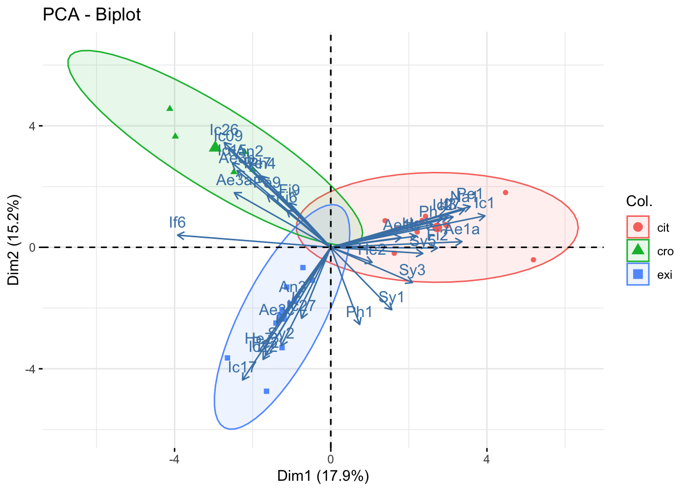

Os métodos de estatística multivariada podem ser utilizados para observarmos estrutura nos dados. O grande desafio é buscar padrões gerais que possam ser transpostos para outros conjuntos de dados. A as técnicas demonstradas aqui necessitam ser aplicadas interpretadas com cautela, para evitar interpretações errôneas (Crawley, 2013).
11.1 Métodos de ordenação
As técnicas de ordenação criam novas variáveis (chamadas eixos principais) por meio das quais as amostras recebem escores ou são organizadas. Desta forma, partimos com um conjunto maior de variáveis para um conjunto menor de variáveis que resumem os padrões mais importantes observados nos dados (Gotelli & Ellison, 2016).
11.1.1 Análise de Componentes Principais (PCA)
A ideia da análise de componentes principais é encontrar uma combinação linear de diversas variáveis para capturar o máximo da variação possível (Crawley, 2013). Este método é utilizado para reduzir a dimensionalidade dos dados. A análise dos componentes principais é bem-sucedida quando temos fortes intercorrelações entre os dados originais (Gotelli & Ellison, 2016).
No conjunto de dados comunidades, temos a comunidade de vespas associadas a diferentes espécies de figueiras As três primeiras colunas representam as amostras, hospedeiros e áreas, enquanto as colunas 4 em diante representam as abundâncias de cada uma das espécies representadas por letras e números.
library(readxl)comun <-read_excel("dados_R.xlsx", sheet ="comunidades")dim(comun) #dimensões do objeto: 25 linhas e 39 colunas
As colunas 4 a 39 colunas apresentam as espécies que estamos interessados, e cada uma das linhas apresenta uma amostra.
Vamos extrair as colunas 4 a 39 e realizar a análise dos componentes principais. Utilizaremos a função prcomp(). Tendo em vista que a variância das abundâncias podem diferir entre as espécies, optamos incluir o argumento scale = TRUE. Assim, a variável será colocada em escala, com média igual a 0 e desvio padrão igual a 1.
pca.comun <-prcomp(comun[,4:39], scale=TRUE) # objeto com a análise dos componentes principais.summary(pca.comun)
Foram criados 25 componentes principais, sendo que o primeiro explica 17,92% da variância nos dados. A linha Cumulative Proportion mostra a proporção cumulativa que é explicada por cada um dos componentes criados. Desta forma, os componentes PC1 a PC8 explicam 75% da variação total.
11.1.1.1 Scree plots (gráficos de declive)
Na etapa anterior, criamos um objeto de PCA, e observaremos como cada um dos componentes principais criados explicaram a variação dos dados. No exemplo o componente principal 1 (PC1) explica 16,7% da variância dos dados. Esses valores podem ser plotados em um gráfico:
plot(pca.comun)
Podemos melhorar a visualização com o pacote factoextra ( Figura 11.1). Caso não esteja instalado, utilizar o comando install.packages("factoextra").
library(factoextra)
Loading required package: ggplot2
Welcome! Want to learn more? See two factoextra-related books at https://goo.gl/ve3WBa
fviz_eig(pca.comun, addlabels =TRUE)
Figura 11.1: gráfico de declive (scree plot) para PCA dos dados pgfull.
Esse gráfico mostra a proporção da variância explicada por cada um dos componentes principais.
11.1.1.2 Biplots
Podemos fazer gráficos mostrando os dois componentes principais (PC1 e PC2, ou até mesmo os demais componentes). Neste gráfico, as setas vermelhas representam cada uma das variáveis e os pontos (números) representam cada uma das observações (Figura 11.2).
par(mar =c(4,2,2,2))biplot(pca.comun)
Figura 11.2: gráfico de biplot para PCA dos dados de comunidades
Quanto mais longa é uma das setas, mais ela está relacionada com cada uma das variáveis. A visualização com a função biplot é um pouco difícil. então podemos utilizar o pacote factoextra para fazer a visualização somente das variáveis (Figura 11.3).
fviz_pca_var(pca.comun, repel =TRUE)
Figura 11.3: gráfico de biplot para PCA dos dados de comunidades no pacote factoextra.
Agora vamos sofisticar o gráfico utilizando a função fviz_pca(), incluindo os argumentos col.ind para colorir os pontos pela variável “hospedeiro” e addEllipses para criar elipses para cada grupo de hospedeiros ( Figura 11.4).
fviz_pca(pca.comun, col.ind = comun$hospedeiro, # colorir observações pela variável "hospedeiro"geom.ind ="point",# utilizar somente pontos para as observações, sem adicionar númerosaddEllipses =TRUE)# adicionar elipses para cada grupo

Figura 11.4: análise dos componentes principais para os dados da comunidade
Podemos observar que os pontos se agruparam por espécie hospedeira, que foi usada para definir o formato e cor dos pontos. As setas correspondem às espécies que mais ocorreram em cada hospedeiro, e espécies compartilhadas aperecem menos relacionadas com os grupos de pontos.
11.2 Métodos de classificação
Enquanto os métodos de ordenação objetivamos separar amostras ao longo de gradientes ambientais ou eixos biológicos, o objeto da classificação é agrupar objetos similares em classes similares (Gotelli & Ellison, 2016).
11.2.1 Análise de agrupamento (Cluster analysis)
A análise de agrupamento é um conjunto de técnicas que busca agrupar as amostras. As técnicas de agrupamento hierárquico podem ser utilizadas para mostrar quais espécies são mais similares entre si agrupando-as em dendrogramas.
Vamos realizar uma análise de agrupamento para observar se as as espécies de comunidades de vespas dem comun são agrupadas pelos hospedeiros. Primeiramente, iremos criar uma matriz de distâncias entre as nossas amostras, utilizando distâncias de Bray-Curtis.
11.2.1.1 Organizar os dados
Para facilitar a visualização posterior, precisamos criar um conjunto de dados do tipo data.frame nos quais os nomes das linhas correspondam às etiquetas que queremos utilizar. Cada nome de linhas deve ser único.
Criar um data frame comun2, a partir do tibble comun em um com a função as.data.frame().
Criar nomes para linhas para isso utilizaremos a função paste() para combinar:
Nesta etapa, criamos uma matriz de dados de comunidades, onde as linhas representam as amostras e as colunas representam as espécies.
A partir desses dados, vamos:
Calcular as distâncias entre as amostras utilizando o índice de Bray-Curtis, com a função vegdist(). Atenção: somente utilizar as colunas referentes às espécies, descartando as 3 primeiras colunas (amostra, hospedeiro e local).
A partir da matriz de distâncias, realizar o agrupamento hierárquico pelo método de UPGMA (Unweighted Pair Group Method using Arithmetic averages), utilizando a função hclust(), com o argumento method = "average".
visualizar o agrupamento com a função plot() ( Figura 11.5).
Figura 11.5: dendrograma obtido por UPGMA agrupando as observações de pinguins selecionadas
No agrupamento, podemos ver 3 grupos principais, representando os 3 hospedeiros (cit, exi e cro). As amostras de cro são mais similares às de exi do que às de cit.
11.3 Testes de hipótese em análise multivariada
Podemos utilisar métodos de análise de variância permutacional (PERMANOVA) sobre a matriz de distância para observar o efeito de um fator sobre as distâncias entre as amostras. No exemplo do conjunto de dados de comunidades, vamos testar a hipótese de que a diferença entre as comunidades dse deve à diferenças entre hospedeiros e entre localidades. A PERMANOVA pode ser realizada com a função adonis2() do pacote vegan:
Permutation test for adonis under reduced model
Permutation: free
Number of permutations: 1000
adonis2(formula = comun[, -(1:3)] ~ hospedeiro + local, data = comun, permutations = 1000, method = "bray")
Df SumOfSqs R2 F Pr(>F)
Model 3 5.8422 0.6555 13.32 0.000999 ***
Residual 21 3.0703 0.3445
Total 24 8.9125 1.0000
---
Signif. codes: 0 '***' 0.001 '**' 0.01 '*' 0.05 '.' 0.1 ' ' 1
Podemos observar que há uma clara relação entre o hospedeiro e a composição da comunidade, entretanto a relação com o local parece ser apenas marginal. É preciso interpretar com cautela esses resultados quando os dados não são balanceados, ou seja, quando não há número próximo de réplicas por grupos. No caso que apresentamos, poderíamos remover o as linhas da espécie cro, mantendo somente as espécies cit e exi, que apresentam cada uma 10 observações com 5 observações por localidade, resultando em um experimento balanceados
11.4 Conclusão
Neste capítulo, exploramos técnicas de estatística multivariada, como a Análise de Componentes Principais (PCA) e a Análise de Agrupamento (Cluster Analysis), que permitem reduzir a dimensionalidade dos dados e identificar padrões ou agrupamentos em conjuntos de dados complexos. Aprendemos a aplicar a PCA para resumir a variância dos dados e visualizar os resultados por meio de gráficos como scree plots e biplots. Além disso, utilizamos métodos de agrupamento hierárquico, como o UPGMA, para identificar similaridades entre amostras e interpretar dendrogramas. Por fim, introduzimos testes de hipóteses multivariadas, como a PERMANOVA, para avaliar o efeito de fatores categóricos na estrutura dos dados. Essas técnicas fornecem ferramentas poderosas para explorar e interpretar dados multivariados, permitindo identificar padrões e relações complexas em conjuntos de dados ecológicos ou de outras áreas.
Crawley, M. J. (2013). The R book (Second edition). Wiley.
Gotelli, N. J., & Ellison, A. M. (2016). Princípios de estatística em ecologia. Artmed.